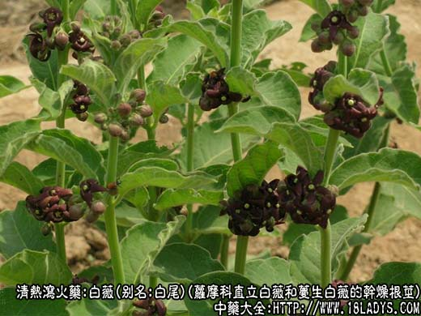
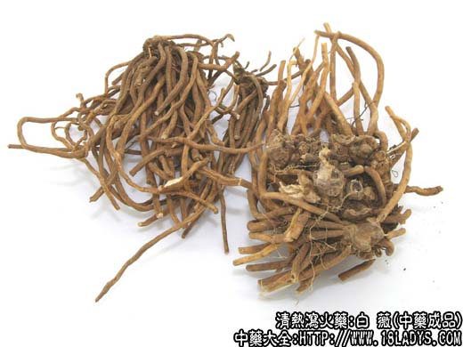
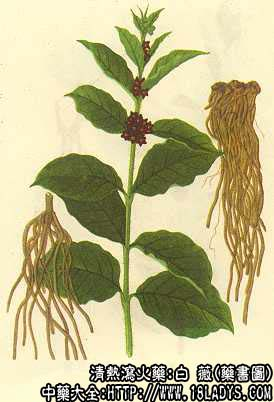

白薇为常用中药。《神农本草经》列为中品。
别名：白尾，龙胆白薇，山烟根子。
来源：为萝藦科多年生草本植物直立白薇和蔓生白薇的干燥根及根茎，野生。
产地：主产于辽宁、安徽、山东、湖北等省，全国各地多有分布。
植物形态：1、直立白薇：多年生草本，茎直立，高约40~70厘米。常不分枝，披白色柔毛，折断时有白浆。单叶对生，宽卵圆形，全缘或皱波状，叶面疏生柔毛，叶背密生柔毛。花簇生叶腋，暗紫色，花冠5深裂。蓇突果纺锤形，成熟后开裂，内有多数顶有白色束毛的种子。
2、蔓生白薇：茎下部直立，上部蔓生。花初开时黄绿色，后渐变为黑紫色，余与直立白薇相同。
性状鉴别：根茎略呈圆柱形，直径0.5~1.5厘米，长约5~10厘米，弯曲皱缩，呈结节状上面有多数圆形下凹的茎痕及少数残存的茎基。须根丛生如马尾，细长圆柱形长5~20厘米，直径1~2毫米，表面黄棕色，平滑或具细皱纹。质脆，易折断。断面淡黄棕色，中央有一黄色木质心，气微味微苦。
以根条粗壮均匀、色黄者为佳。
主要成分：含白薇醇、挥发油及强心甙。
功效与作用：解热、利尿。白薇油有强心甙反应。
炮制：切咀生用。
性味：苦、咸、寒。
归经：入胃、肝、肾经。
功能：清热、凉血、利尿、除烦益阴。
主治：温邪入营，阴虚发热，产后阴虚，烦热呕逆、肾炎、热淋、血淋等症。
临床应用：妇科应用较多。
1、用于产后体虚发热，汗出过多而致头昏者，常配其它滋阴药。方如白薇汤。
2、用于温热病后期，有潮热，下午为甚，但热度不高，可用于清热方剂内加入白薇以助推热，配生地、青蒿等。
3、用于胎前产后小便失禁，配白芍等分为末，以酒冲服。
用量：3~9g。
处方举例：白薇汤《本事本》：白薇9g、当归15g、党参9g、甘草6g，水煎服。
注：白薇品种复杂，各地用药习惯不同，有用同科植物白前作白薇者，有用白薇全草作白薇者，有用其它不同科植物根或全草作白薇者。京津地区习用直立白薇和蔓生白薇的根和根茎。应注意区别。
据“中药鉴别手册”第一册白薇项下记述的混淆情况如下：
科名
名称
使用地区
药用部位
备注
萝藦科
直立白薇
全国大多数地区
根及根茎
江西习用全草
萝藦科
蔓生白薇
全国大多数地区
根及根茎
萝藦科
柳叶白前
全国大多数地区河南、江苏（常州）、安徽、江西（上饶）
根及根茎
萝藦科
芫花叶白前
安徽江西陕西部分地区
根及根茎
萝藦科
潮风草
吉林
根及根茎
萝藦科
紫花合掌消
辽宁
根及根茎
萝藦科
竹灵消
四川
根及根茎
萝藦科
丽红白薇
云南丽江
根及根茎
萝藦科
河南陕西
根及根茎
陕西使用白薇中常混有徐长卿
萝藦科
滇娃儿藤
云南
根及根茎
萝藦科
卵叶儿藤
云南（永善）
根及根茎
菊科
毛大丁草
广东广西
全草
云南用毛大丁草根做白头翁用
百合科
宝铎草
贵州四川
根及根茎
百合科
方寿竹
贵州
根及根茎
鸢尾科学
白射干
江苏（徐州）
根及根茎